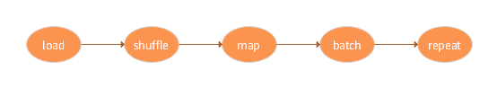
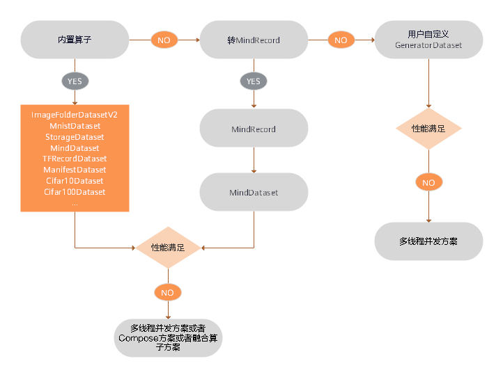
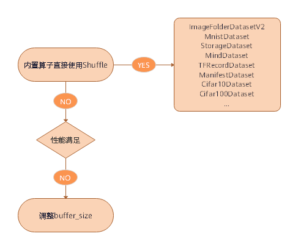
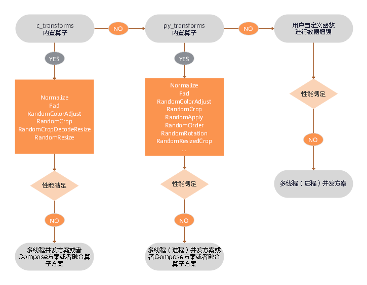
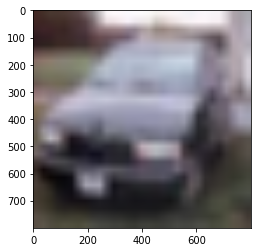
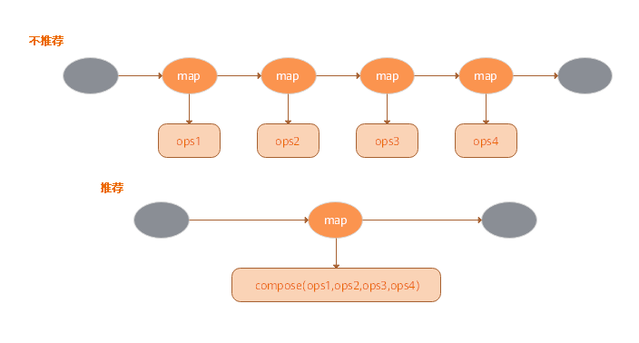
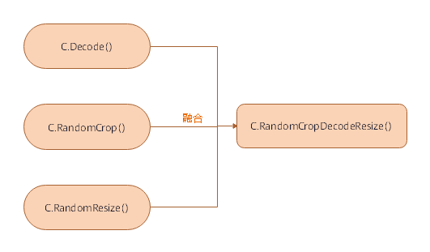

优化数据准备的性能
Ascend GPU CPU 数据准备 初级 中级 高级


概述
数据是整个深度学习中最重要的一环，因为数据的好坏决定了最终结果的上限，模型的好坏只是去无限逼近这个上限，所以高质量的数据输入，会在整个深度神经网络中起到积极作用，数据在整个数据处理和数据增强的过程像经过pipeline管道的水一样，源源不断地流向训练系统，如图所示：

MindSpore为用户提供了数据处理以及数据增强的功能，在数据的整个pipeline过程中，其中的每一步骤，如果都能够进行合理的运用，那么数据的性能会得到很大的优化和提升。本次体验将基于CIFAR-10数据集来为大家展示如何在数据加载、数据处理和数据增强的过程中进行性能的优化。
整体流程
准备环节。
数据加载性能优化。
shuffle性能优化。
数据增强性能优化。
性能优化方案总结。
准备环节
导入模块
dataset模块提供API用来加载和处理数据集。
import mindspore.dataset as ds
numpy模块用于生成ndarray数组。
import numpy as np
下载所需数据集
在当前工作目录下创建
./dataset/Cifar10Data目录，本次体验所用的数据集存放在该目录下。在当前工作目录下创建
./transform目录，本次体验转换生成的数据集存放在该目录下。下载CIFAR-10二进制格式数据集，并将数据集文件解压到
./dataset/Cifar10Data/cifar-10-batches-bin目录下，数据加载的时候使用该数据集。下载CIFAR-10 Python文件格式数据集，并将数据集文件解压到
./dataset/Cifar10Data/cifar-10-batches-py目录下，数据转换的时候使用该数据集。
目录结构如下所示：
dataset/Cifar10Data
├── cifar-10-batches-bin
│ ├── batches.meta.txt
│ ├── data_batch_1.bin
│ ├── data_batch_2.bin
│ ├── data_batch_3.bin
│ ├── data_batch_4.bin
│ ├── data_batch_5.bin
│ ├── readme.html
│ └── test_batch.bin
└── cifar-10-batches-py
├── batches.meta
├── data_batch_1
├── data_batch_2
├── data_batch_3
├── data_batch_4
├── data_batch_5
├── readme.html
└── test_batch
其中：
cifar-10-batches-bin目录为CIFAR-10二进制格式数据集目录。cifar-10-batches-py目录为CIFAR-10 Python文件格式数据集目录。
数据加载性能优化
MindSpore为用户提供了多种数据加载方式，其中包括常用数据集加载、用户自定义数据集加载、MindSpore数据格式加载，详情内容请参考加载数据集。对于数据集加载，底层实现方式的不同，会导致数据集加载的性能存在差异，如下所示：
常用数据集 |
用户自定义 |
MindRecord |
|
|---|---|---|---|
底层实现 |
C++ |
Python |
C++ |
性能 |
高 |
中 |
高 |
性能优化方案

数据加载性能优化建议如下：
已经支持的数据集格式优选内置加载算子，具体内容请参考内置加载算子，如果性能仍无法满足需求，则可采取多线程并发方案，请参考本文多线程优化方案。
不支持的数据集格式，优选转换为MindSpore数据格式后再使用
MindDataset类进行加载，具体内容请参考将数据集转换为MindSpore数据格式，如果性能仍无法满足需求，则可采取多线程并发方案，请参考本文多线程优化方案。不支持的数据集格式，算法快速验证场景，优选用户自定义
GeneratorDataset类实现，如果性能仍无法满足需求，则可采取多进程并发方案，请参考本文多进程优化方案。
代码示例
基于以上的数据加载性能优化建议，本次体验分别使用内置加载算子Cifar10Dataset类、数据转换后使用MindDataset类、使用GeneratorDataset类进行数据加载，代码演示如下：
使用内置算子
Cifar10Dataset类加载CIFAR-10数据集，这里使用的是CIFAR-10二进制格式的数据集，加载数据时采取多线程优化方案，开启了4个线程并发完成任务，最后对数据创建了字典迭代器，并通过迭代器读取了一条数据记录。cifar10_path = "./dataset/Cifar10Data/cifar-10-batches-bin/" # create Cifar10Dataset for reading data cifar10_dataset = ds.Cifar10Dataset(cifar10_path,num_parallel_workers=4) # create a dictionary iterator and read a data record through the iterator print(next(cifar10_dataset.create_dict_iterator()))
输出：
{'image': array([[[235, 235, 235], [230, 230, 230], [234, 234, 234], ..., [248, 248, 248], [248, 248, 248], [249, 249, 249]], ..., [120, 120, 119], [146, 146, 146], [177, 174, 190]]], dtype=uint8), 'label': array(9, dtype=uint32)}
使用
Cifar10ToMR这个类将CIFAR-10数据集转换为MindSpore数据格式，这里使用的是CIFAR-10 python文件格式的数据集，然后使用MindDataset类加载MindSpore数据格式数据集，加载数据采取多线程优化方案，开启了4个线程并发完成任务，最后对数据创建了字典迭代器，并通过迭代器读取了一条数据记录。from mindspore.mindrecord import Cifar10ToMR cifar10_path = './dataset/Cifar10Data/cifar-10-batches-py/' cifar10_mindrecord_path = './transform/cifar10.record' cifar10_transformer = Cifar10ToMR(cifar10_path,cifar10_mindrecord_path) # executes transformation from Cifar10 to MindRecord cifar10_transformer.transform(['label']) # create MindDataset for reading data cifar10_mind_dataset = ds.MindDataset(dataset_file=cifar10_mindrecord_path,num_parallel_workers=4) # create a dictionary iterator and read a data record through the iterator print(next(cifar10_mind_dataset.create_dict_iterator()))
输出：
{'data': array([255, 216, 255, ..., 63, 255, 217], dtype=uint8), 'id': array(30474, dtype=int64), 'label': array(2, dtype=int64)}
使用
GeneratorDataset类加载自定义数据集，并且采取多进程优化方案，开启了4个进程并发完成任务，最后对数据创建了字典迭代器，并通过迭代器读取了一条数据记录。def generator_func(num): for i in range(num): yield (np.array([i]),) # create GeneratorDataset for reading data dataset = ds.GeneratorDataset(source=generator_func(5),column_names=["data"],num_parallel_workers=4) # create a dictionary iterator and read a data record through the iterator print(next(dataset.create_dict_iterator()))
输出：
{'data': array([0], dtype=int64)}
shuffle性能优化
shuffle操作主要是对有序的数据集或者进行过repeat的数据集进行混洗，MindSpore专门为用户提供了shuffle函数，其中设定的buffer_size参数越大，混洗程度越大，但时间、计算资源消耗也会大。该接口支持用户在整个pipeline的任何时候都可以对数据进行混洗，具体内容请参考shuffle处理。但是因为底层的实现方式不同，该方式的性能不如直接在内置加载算子中设置shuffle参数直接对数据进行混洗。
性能优化方案

shuffle性能优化建议如下：
直接使用内置加载算子的
shuffle参数进行数据的混洗。如果使用的是
shuffle函数，当性能仍无法满足需求，可通过调大buffer_size参数的值来优化提升性能。
代码示例
基于以上的shuffle性能优化建议，本次体验分别使用内置加载算子Cifar10Dataset类的shuffle参数和Shuffle函数进行数据的混洗，代码演示如下：
使用内置算子
Cifar10Dataset类加载CIFAR-10数据集，这里使用的是CIFAR-10二进制格式的数据集，并且设置shuffle参数为True来进行数据混洗，最后对数据创建了字典迭代器，并通过迭代器读取了一条数据记录。cifar10_path = "./dataset/Cifar10Data/cifar-10-batches-bin/" # create Cifar10Dataset for reading data cifar10_dataset = ds.Cifar10Dataset(cifar10_path,shuffle=True) # create a dictionary iterator and read a data record through the iterator print(next(cifar10_dataset.create_dict_iterator()))
输出：
{'image': array([[[254, 254, 254], [255, 255, 254], [255, 255, 254], ..., [232, 234, 244], [226, 230, 242], [228, 232, 243]], ..., [ 64, 61, 63], [ 63, 58, 60], [ 61, 56, 58]]], dtype=uint8), 'label': array(9, dtype=uint32)}
使用
shuffle函数进行数据混洗，参数buffer_size设置为3，数据采用GeneratorDataset类自定义生成。def generator_func(): for i in range(5): yield (np.array([i,i+1,i+2,i+3,i+4]),) ds1 = ds.GeneratorDataset(source=generator_func,column_names=["data"]) print("before shuffle:") for data in ds1.create_dict_iterator(): print(data["data"]) ds2 = ds1.shuffle(buffer_size=3) print("after shuffle:") for data in ds2.create_dict_iterator(): print(data["data"])
输出：
before shuffle: [0 1 2 3 4] [1 2 3 4 5] [2 3 4 5 6] [3 4 5 6 7] [4 5 6 7 8] after shuffle: [2 3 4 5 6] [0 1 2 3 4] [4 5 6 7 8] [1 2 3 4 5] [3 4 5 6 7]
数据增强性能优化
在图片分类的训练中，尤其是当数据集比较小的时候，用户可以使用数据增强的方式来预处理图片，从而丰富数据集。MindSpore为用户提供了多种数据增强的方式，其中包括：
使用内置C算子（
c_transforms模块）进行数据增强。使用内置Python算子（
py_transforms模块）进行数据增强。用户可根据自己的需求，自定义Python函数进行数据增强。
具体的内容请参考数据增强。因为底层的实现方式不同，所以性能还是有一定的差异，如下所示：
模块 |
底层接口 |
说明 |
|---|---|---|
c_transforms |
C++（基于OpenCV） |
性能高 |
py_transforms |
Python（基于PIL） |
该模块提供了多种图像增强功能，并提供了PIL Image和Numpy数组之间的传输方法 |
性能优化方案

数据增强性能优化建议如下：
优先使用
c_transforms模块进行数据增强，因为性能最高，如果性能仍无法满足需求，可采取多线程优化方案、Compose优化方案或者算子融合优化方案。如果使用了
py_transforms模块进行数据增强，当性能仍无法满足需求，可采取多线程优化方案、多进程优化方案、Compose优化方案或者算子融合优化方案。c_transforms模块是在C++内维护buffer管理，py_transforms模块是在Python内维护buffer管理。因为Python和C++切换的性能成本，建议不要混用算子。如果用户使用了自定义Python函数进行数据增强，当性能仍无法满足需求，可采取多线程优化方案或者多进程优化方案，如果还是无法提升性能，就需要对自定义的Python代码进行优化。
代码示例
基于以上的数据增强性能优化建议，本次体验分别使用c_transforms模块和自定义Python函数进行了数据增强，演示代码如下所示：
使用
c_transforms模块进行数据增强，数据增强时采用多线程优化方案，开启了4个线程并发完成任务，并且采用了算子融合优化方案，使用RandomResizedCrop融合类替代RandomResize类和RandomCrop类。import mindspore.dataset.transforms.c_transforms as c_transforms import mindspore.dataset.transforms.vision.c_transforms as C import matplotlib.pyplot as plt cifar10_path = "./dataset/Cifar10Data/cifar-10-batches-bin/" # create Cifar10Dataset for reading data cifar10_dataset = ds.Cifar10Dataset(cifar10_path,num_parallel_workers=4) transforms = C.RandomResizedCrop((800,800)) # apply the transform to the dataset through dataset.map() cifar10_dataset = cifar10_dataset.map(input_columns="image",operations=transforms,num_parallel_workers=4) data = next(cifar10_dataset.create_dict_iterator()) plt.imshow(data["image"]) plt.show()
输出：

使用自定义Python函数进行数据增强，数据增强时采用多进程优化方案，开启了4个进程并发完成任务。
def generator_func(): for i in range(5): yield (np.array([i,i+1,i+2,i+3,i+4]),) ds3 = ds.GeneratorDataset(source=generator_func,column_names=["data"]) print("before map:") for data in ds3.create_dict_iterator(): print(data["data"]) func = lambda x:x**2 ds4 = ds3.map(input_columns="data",operations=func,python_multiprocessing=True,num_parallel_workers=4) print("after map:") for data in ds4.create_dict_iterator(): print(data["data"])
输出：
before map: [0 1 2 3 4] [1 2 3 4 5] [2 3 4 5 6] [3 4 5 6 7] [4 5 6 7 8] after map: [ 0 1 4 9 16] [ 1 4 9 16 25] [ 4 9 16 25 36] [ 9 16 25 36 49] [16 25 36 49 64]
性能优化方案总结
多线程优化方案
在数据pipeline过程中，相关算子一般都有线程数设置参数，来提升处理并发度，提升性能，例如：
在数据加载的过程中，内置数据加载类有
num_parallel_workers参数用来设置线程数。在数据增强的过程中，
map函数有num_parallel_workers参数用来设置线程数。在Batch的过程中，
batch函数有num_parallel_workers参数用来设置线程数。
具体内容请参考内置加载算子。
多进程优化方案
数据处理中Python实现的算子均支持多进程的模式，例如：
GeneratorDataset这个类默认是多进程模式，它的num_parallel_workers参数表示的是开启的进程数，默认为1，具体内容请参考GeneratorDataset。如果使用Python自定义函数或者
py_transforms模块进行数据增强的时候，当map函数的参数python_multiprocessing设置为True时，此时参数num_parallel_workers表示的是进程数，参数python_multiprocessing默认为False，此时参数num_parallel_workers表示的是线程数，具体的内容请参考内置加载算子。
Compose优化方案
Map算子可以接收Tensor算子列表，并将按照顺序应用所有的这些算子，与为每个Tensor算子使用的Map算子相比，此类“胖Map算子”可以获得更好的性能，如图所示：

算子融合优化方案
提供某些融合算子，这些算子将两个或多个算子的功能聚合到一个算子中。具体内容请参考数据增强算子，与它们各自组件的流水线相比，这种融合算子提供了更好的性能。如图所示：
